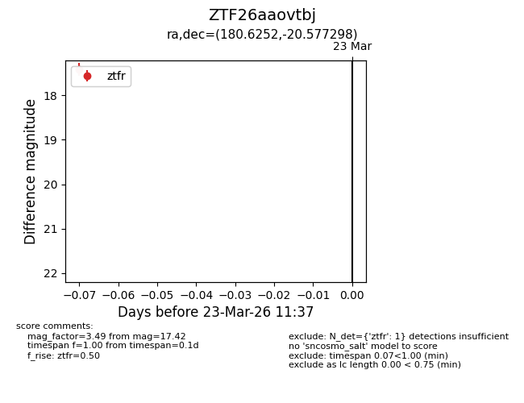
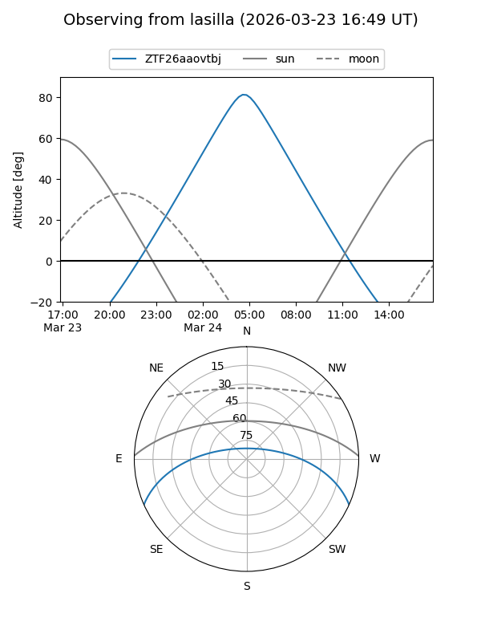
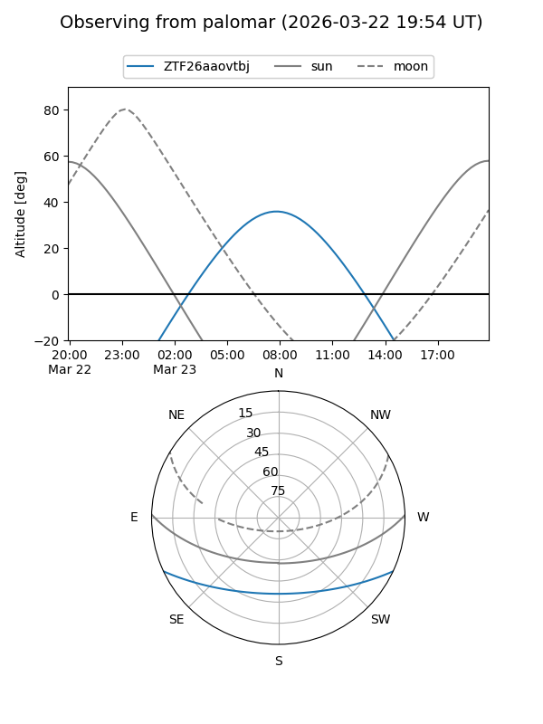

ZTF26aaovtbj
Target ZTF26aaovtbj at 2026-03-23 11:39
Aliases and brokers:
FINK: link
Lasair: link
ALeRCE: link
alt names
ZTF26aaovtbj (ztf,fink_ztf)
Coordinates:
equatorial (ra, dec) = 180.6252,-20.57730
equatorial (HMS+DMS) = 12:02:30.05,-20:34:38.27
galactic (l, b) = (287.7281,+40.84525)
Flags:
Photometry:
last ztfr=17.42
1 ztfr detections
Lightcurve

Visibility


Additional plots